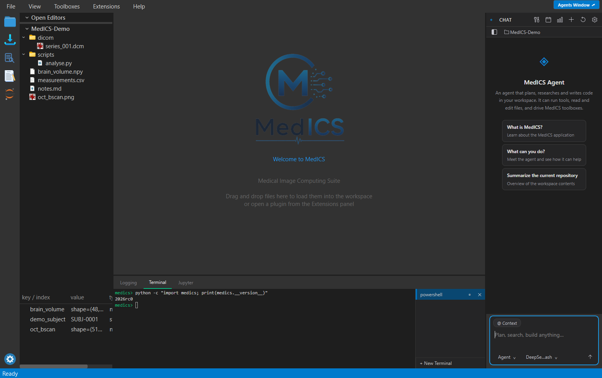
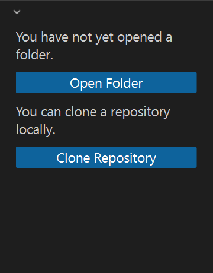
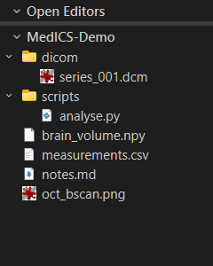
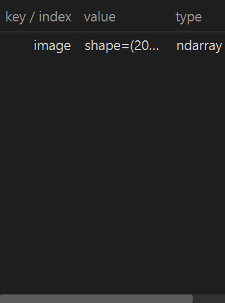
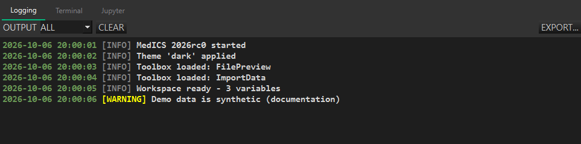
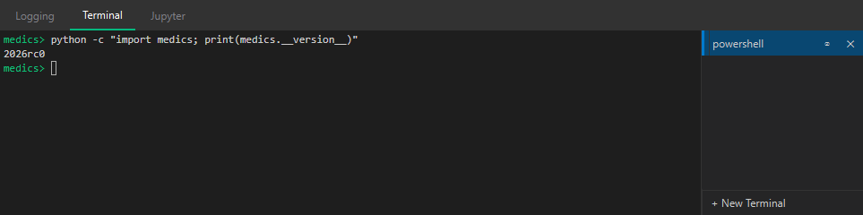
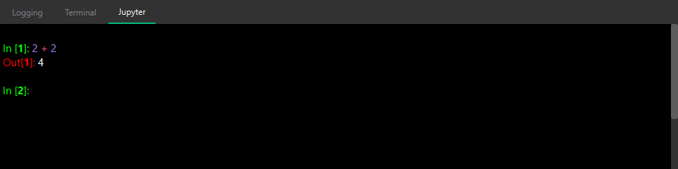
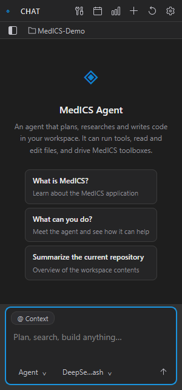

The MedICS window
MedICS opens as a single window. Your tools open as tabs in the middle, and the panels around them give you the file tree, your variables, the log, a terminal and the Python console. Panels can be shown or hidden, resized and re-arranged.
Show or hide panels from the View menu, or double-click a tab title to collapse the surrounding panels and focus on your work.

The window is built from six regions:
| Region | What it holds |
|---|---|
| Menu bar | The File, View, Toolboxes, Extensions and Help menus, plus the Agents Window button at the right. |
| Activity Bar | The icon strip on the left — Explorer, your toolboxes and extensions, and Settings. |
| Left panels | The File Explorer on top, and Workspace Variables below it. |
| Central tabs | Every file, toolbox and extension opens here. |
| Right panel | The Chat panel — the AI assistant — when it is enabled. |
| Bottom panel | One dock shared by the Logging, Terminal, Jupyter and Results tabs. |
When no tab is open, the centre shows a welcome screen — Welcome to MedICS. Drop files onto it to load them into the workspace, or open a tool from the Activity Bar.
Menu bar
| Menu | What is in it |
|---|---|
| File | Open Folder… (Ctrl+O), Open Workspace…, New Window (Ctrl+Shift+N), Save, Save As…, Exit (Ctrl+Q). |
| View | Focus Mode (F11), Theme (Dark / Light), the panel toggles — Show Explorer, Show Terminal, Show Logging, Show Variables, Results — and Agents Window (Ctrl+Shift+A). |
| Toolboxes | A checkbox for each toolbox; ticking it shows or hides that toolbox's Activity Bar icon. |
| Extensions | A checkbox for each installed extension, then Open Extension Manager…. |
| Image | Image-processing operations — type conversion, thresholding, transforms, Z-projection. Appears only when a processing extension is installed. |
| Process | Filters, binary morphology, math, enhancement, noise and batch operations. Appears with a processing extension. |
| Help | Documentation (F1), Keyboard Shortcuts (Shift+F1), MedICS Community Wiki, Report a Bug / Send Feedback…, Check for Updates…, Open Log Folder, About MedICS. |
At the right end of the menu bar sits the Agents Window ➚ button, which opens the assistant in its own window (AI assistant).
Activity Bar
The vertical strip on the far left. From top to bottom: the Explorer (tooltip File Explorer), one icon for each loaded toolbox (tooltip Open <name>), one icon for each loaded extension, and the Settings gear at the bottom.
- Click an icon to open its tab; click it again to bring the tab back to the front.
- Drag toolbox and extension icons to reorder them. The core icons (Explorer, Settings) stay in place.
- Right-click the strip for a menu that shows or hides each toolbox and extension icon.
File Explorer
Browse the folder you are working in. Double-click a file to preview it in a tab, drag files or folders into the window to import them, and right-click for the full set of file actions.


At the top, Open Editors lists the files you currently have open — click one to bring its tab to the front. Below it is the folder tree. When no folder is open the panel shows No Folder Opened, with buttons to Open Folder or Clone Repository.
| Button | Where | What it does |
|---|---|---|
| Save All | Open Editors | Saves every modified editor tab. |
| Close All | Open Editors | Closes every open editor tab. |
| New File… | Folder row | Creates a file in the selected folder. |
| New Folder… | Folder row | Creates a sub-folder. |
| Refresh | Folder row | Re-reads the folder from disk. |
| Collapse Folders in Explorer | Folder row | Closes every expanded folder. |
| Open Folder | Empty state | Chooses the folder to browse. |
| Clone Repository | Empty state | Asks for a repository URL and a parent folder, clones it and opens the result. |
Right-click a file or folder for these actions:
| Item | What it does |
|---|---|
| Open / Open in PyEditor / Open in FilePreview | Opens the file in a tab. Text and source files offer the editor and the previewer; other files offer Open. |
| Open with System Default App | Hands the file to your operating system. |
| Open in Terminal | Opens a terminal already in that folder. |
| Open Folder Here | Makes the folder the Explorer root. |
| Cut / Copy / Paste | Move or copy files within the Explorer. |
| Copy Path / Copy File Name | Copies the full path or just the name. |
| Rename… / Delete | Renames or deletes the selection (deleting several items asks once). |
| Reveal in File Explorer | Shows the file in your operating system's file manager. |
| New File… / New Folder… / Refresh | Available on a folder row and on empty space. |
Ctrl+C copies the selected path(s) from the tree.
Workspace Variables
Every value you create in Python — arrays, images, tables and other objects — is kept in the workspace and listed here. Double-click a variable to inspect or preview it.

Each row shows the variable's name / index, its value and its type. The list is live: a variable created in the console, in PyEditor or in a notebook appears here straight away.
| Action | How |
|---|---|
| Inspect or preview | Double-click a row — images and volumes open in a preview. |
| Use a variable elsewhere | Drag a row onto another toolbox. |
| Load a file | Drop a file onto the tree — it is imported into the workspace. |
| Save a variable | Right-click → Save Variable, then pick a format such as .med, .mat, .npy, TIFF or JSON. Select several to save them together. |
| Copy the name or value | Right-click → Copy Variable Name / Copy Variable Value. |
| Delete | Right-click → Delete Variable; you are asked to confirm. |
A very large value shows a (truncated) row instead of expanding node by node, so the tree stays responsive.
To keep the whole workspace, use File → Save / Save As… to write a
.med file, and File → Open Workspace… to load it back.
The bottom panel
The bottom of the window is one dock shared by four tabs — Logging, Terminal, Jupyter and Results. Click a tab to switch, and drag the splitter to resize. Each tab is shown or hidden from the View menu.
Logging
The in-app output panel shows messages from every part of MedICS.

| Control | What it does |
|---|---|
| Level selector | Filters the view by severity: ALL, DEBUG, INFO, WARNING, ERROR, CRITICAL. |
| CLEAR | Empties the visible log and the buffer behind it. |
| EXPORT… | Writes the log to a text file (default name exported_log.txt). |
Entries read time [LEVEL] message and are colour-coded by level.
Terminal
A real shell embedded in the window. It runs in its own process, separate from the application, so it is the place for command-line tools and scripts.

| Control | What it does |
|---|---|
| Terminal list | One row per open shell, named after the shell. The active row is highlighted. |
| Clear (⊘) | Clears that terminal's scrollback. |
| Kill (✕) | Ends that shell. |
| + New Terminal | Opens another shell; a picker offers Command Prompt, PowerShell, Windows PowerShell or Git Bash on Windows, and the login shells on macOS/Linux. |
| Right-click a row | Rename, Kill Terminal, Clear. |
The terminal is a plain shell, isolated from the running application. Use the Jupyter console when you want your workspace variables.
Jupyter console
An interactive Python console that runs inside MedICS, so it shares your workspace — NumPy,
Matplotlib and the scientific stack are ready to use, and ws is a handle to your variables.

Type in the input area — the prompt reads In [N]: — and use:
| Key | Action |
|---|---|
| Enter | Run the current cell. |
| Ctrl+Enter | Edit in multiple lines. |
| Shift+Enter | Force-run a multi-line cell. |
| Tab | Complete the name you are typing (variables, functions, attributes, dictionary keys). |
| Shift+Tab | Show the signature and documentation of the call under the cursor. |
| Esc | Dismiss the completion list. |
Output — and plots — render inline under the cell, so plt.show() draws in the console rather
than opening a window. The console keeps an input history you can recall with the arrow keys, and
whos lists every name in the namespace. A small spinner on the Jupyter tab shows while a
cell is still running.
The same environment is available as a full notebook in the JupyterLab toolbox — see Toolboxes.
Results
When a measurement or results extension is installed, the Results tab lists its table. The toolbar has Export… (writes the table to a CSV file) and a status line showing the row and column count. Click a column header to sort; right-click for Copy, Recalculate selected and Check calibration.
Status bar
The strip along the bottom of the window reports what is happening — short messages such as Loading…, Settings applied successfully or an error. On the right sits the calibration badge: it reads no image when nothing is calibrated, otherwise a short summary of the current image's pixel spacing, slice thickness, frame time and units. Click it to set the scale.
Agent chat
The AI assistant docks on the right as the Chat panel, and also opens in its own window. Ask questions about your data, or hand off a task and it will use the tools it needs — actions that change data ask for your approval first.

See AI assistant for the full guide.